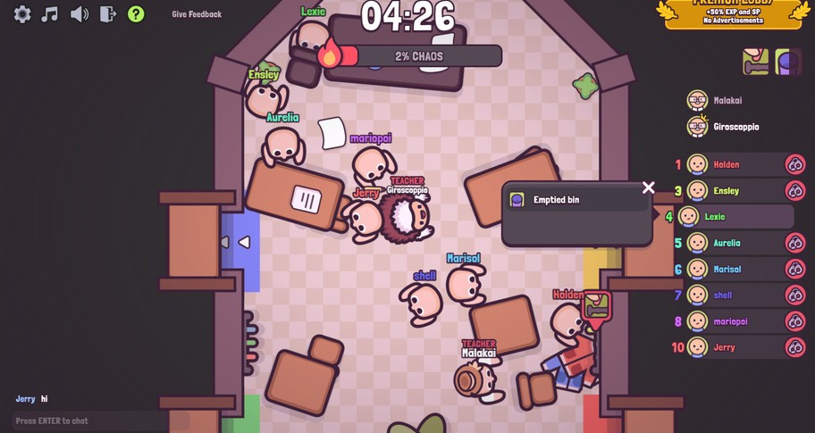
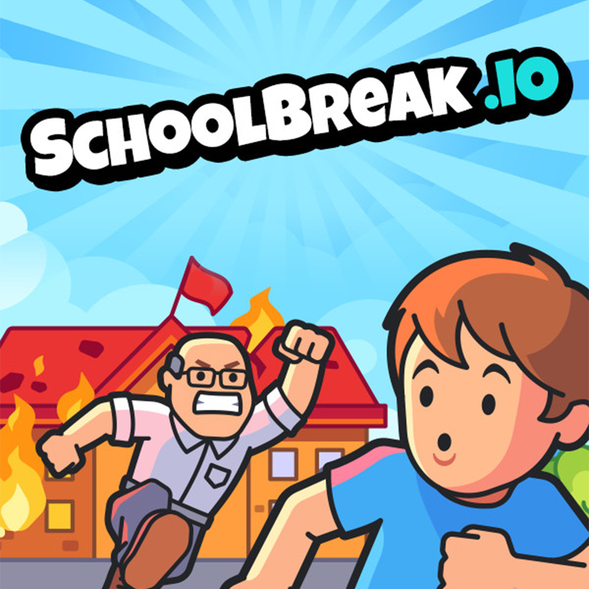
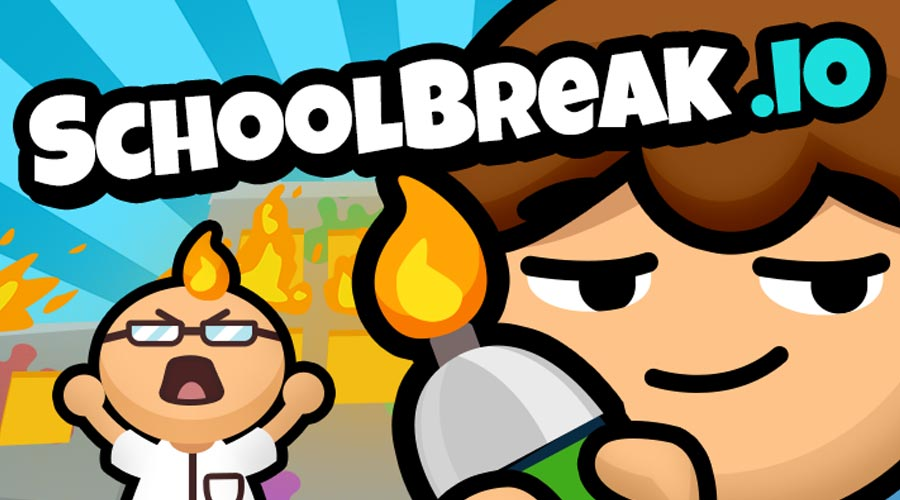

SchoolBreak.io is a 2D action sandbox game from Tobspr Games (the studio behind YORG.io and shapez). Here's the premise: 6 to 10 players split into students and teachers inside a school. Students have 5 minutes to push the Chaos Bar to 100% by causing as much mayhem as possible. Teachers try to stop them by patrolling, catching rule-breakers, and sending them to detention.
What makes this game stand out is the physics sandbox. You can throw, push, smash, break, spill, splash, shoot, dump, and ride objects throughout the school. There are hidden interactions too — spray deodorant into a fire to create an explosion, or ride a bike to zip across classrooms faster than teachers can chase. Trust me, the emergent chaos is what keeps every round feeling different.
The game runs in your browser, supports private lobbies, and has a full map editor for custom creations. Originally released on Steam in July 2022, the browser version is completely free.
🎯 Game Basics
Each round starts with players assigned to either the student or teacher team. The school is a multi-room environment filled with interactive objects — desks, chairs, books, fire extinguishers, paint cans, bikes, musical instruments, and more.
Students work together to fill the Chaos Bar by interacting with objects and causing disruptions. Every thrown textbook, spilled paint puddle, and blasted music pushes the bar higher. If it hits 100% before the 5-minute timer runs out, students win.

Teachers patrol the halls and catch students in the act. When a teacher spots misconduct, they press the "Blame" button. If they're right, the student gets sent to the isolation room for 30 seconds. If the teacher accuses the wrong student? They have to explain themselves to the parents — so accuracy matters.
Teachers win if they keep the Chaos Bar below 100% when the 5-minute clock hits zero.
🎮 Controls
| Action | Key |
|---|---|
| Move | WASD / Arrow Keys |
| Pick Up Object | E |
| Use / Throw Object | Hold Left Mouse Button |
| Grab / Sprint | Right Mouse Button |
| Jump | Spacebar |
| Blame (Teacher) | Click on student |
| Chat | Enter |
Hold left mouse button to charge object throws. Longer hold = farther throw. This matters for hitting targets across rooms or launching projectiles at hard-to-reach areas.

🎒 Student Strategies
Chaos Methods
| Action | How | Chaos Impact |
|---|---|---|
| Throw textbooks | Pick up with E, throw with LMB | Moderate — quick and repeatable |
| Spill paint | Find paint cans, interact with them | High — large area coverage |
| Ride bikes | Mount bikes to zoom through halls | Moderate — covers distance fast |
| Blast music | Find instruments/speakers, activate them | High — area-wide disruption |
| Dirty toilets | Interact with bathroom fixtures | Moderate — requires bathroom visits |
| Fire extinguisher chaos | Grab extinguishers, spray everywhere | Very high — massive area effect |
| Frame classmates | Use "Blame" button on other students | Strategic — diverts teacher attention |
Student Tips
Spread out. Don't cluster in one room. Teachers can't cover everything if students are causing chaos in 5 rooms simultaneously. Split into pairs and hit different zones.
Use the Blame button. When a teacher is closing in, blame an innocent classmate. If the teacher chases the wrong student, you get free time to keep causing chaos. Just don't blame the same person repeatedly — teachers catch on fast.
Fire extinguishers are OP. One fire extinguisher sprayed across a hallway creates massive chaos and blocks visibility. Teachers can't see through the cloud to catch anyone. Save these for key moments when the Chaos Bar is near 70-80%.
🧑🏫 Teacher Strategies
Defense Approach
| Tactic | How | Effectiveness |
|---|---|---|
| Patrol high-traffic areas | Cover hallways between classrooms | High — catches students in transit |
| Guard high-value objects | Stay near fire extinguishers and paint | Very high — denies best chaos tools |
| Ride bikes to respond fast | Teachers can mount bikes too | High — rapid response to alerts |
| Move valuables out of reach | Push objects behind windows/ledges | Moderate — delays student access |
| Use Blame wisely | Only blame when you actually see the act | Critical — wrong blame wastes time |

Teacher Tips
Don't chase every student. If you leave your post to chase one kid into a corner, three more students will wreck the room behind you. Stay near high-value objects and only pursue when you can confirm a quick catch.
Protect the fire extinguishers first. These are the single biggest chaos multipliers in the game. If a student grabs one, spray the hallway in seconds. As a teacher, your first priority is camping near extinguishers or confiscating them before students reach them.
Watch for framing. Students can blame innocent classmates. If a student looks "guilty" but the area is already clean, they might be covering for someone else. Check adjacent rooms before committing to a detention.
💎 Tips & Sandbox Interactions
Spraying deodorant into a fire creates a massive flame burst. This is one of the most powerful sandbox interactions in the game. Find a room with both items and create an instant chaos spike that teachers can't easily contain.
Don't cause chaos randomly. Wait until 3-4 students are in position, then all trigger your biggest chaos actions simultaneously. The Chaos Bar jumps dramatically when multiple disruptions happen at once — this overwhelms teachers who can only be in one place.
Bikes aren't just for causing chaos — they're your escape route. When a teacher spots you, mount a bike and sprint through hallways. Teachers on foot can't catch a moving bike. Both students and teachers can ride, so deny teachers bike access by grabbing them first.
The best teachers don't run around frantically. Pick a high-traffic room with valuable objects, park yourself there, and wait. Students will come to you because that's where the chaos-causing items are. When they show up, catch them red-handed and send them to detention.
When a student gets detained for 30 seconds, they're out of the match. Use this time as a student to plan your next chaos burst — coordinate with remaining teammates so when the detained player returns, everyone hits at once. As a teacher, the detained student's absence is your window to push the bar back down.
The built-in map editor lets you create custom school layouts. Use this to practice chaos strategies or design teacher-friendly layouts for competitive play. Share maps with your lobby via the custom game feature.
❓ Frequently Asked Questions
How many players per round?
6 to 10 players per round. Some versions support 4-12. Players are split between students and teachers automatically.
How long does a round last?
Each round is 5 minutes. Students need to fill the Chaos Bar to 100% within that time. Teachers just need to survive the clock.
What happens when a student gets caught?
The student is sent to the isolation room for 30 seconds. They can't cause chaos during this time but rejoin after the detention ends.
Can I play with friends privately?
Yes. Create a custom lobby and share the invite link with friends. You can also use the map editor to set up custom game environments.
Is SchoolBreak.io free?
The browser version is completely free. There's also a paid Steam version with additional features.
What's the best strategy for students?
Spread across multiple rooms, use fire extinguishers for maximum chaos, and coordinate simultaneous chaos bursts. Frame classmates to divert teacher attention when you're at risk.
📝 Conclusion
SchoolBreak.io turns a simple concept — students vs. teachers — into a physics sandbox full of emergent chaos. The 2D interaction system creates moments that no two matches replicate. Whether you're coordinating a synchronized chaos burst or camping a hallway as the ultimate hall monitor, every round tells a different story.
Ready to cause some chaos? Jump into SchoolBreak.io and see if your school survives the break.
Last updated: June 22, 2026
Written by the iogameguide.com team